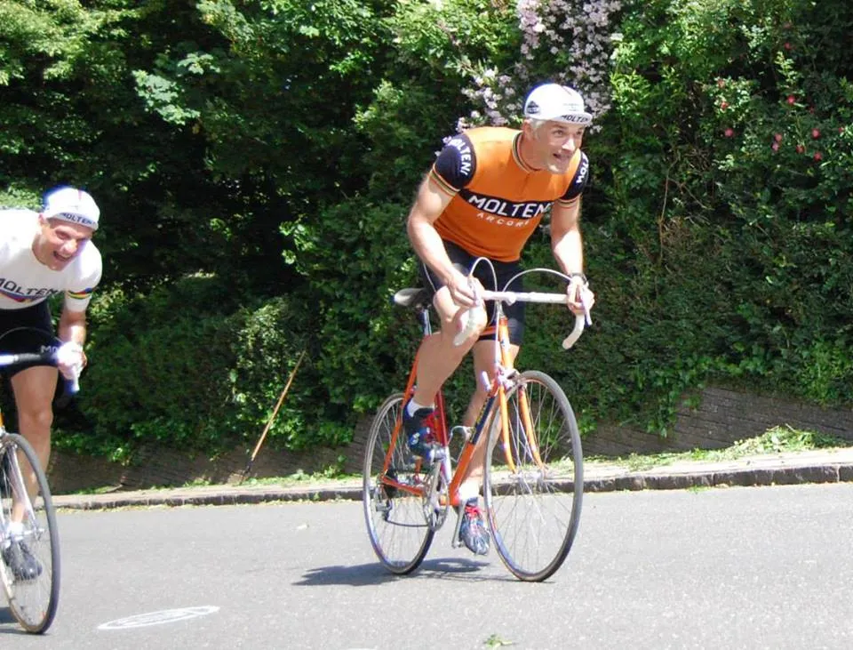

100 gange Kiddesvej

Om en måned vil 3 ryttere fra Squadra Molteni kaster sig ud i et vildt rekordforsøg: Hver rytter skal køre 100 gange op af Kiddesvej. Selvfølgelig på gamle stålcykler og i uld.
Verdensrekordforsøg
Scenen er den legendariske Kiddesvej i Vejle. Her vil Squadra Molteni-rytterne Grane Maaløe, Eigil Leegaard og Niels Bjørnsteen den 20. maj kaste sig ud i et 3-dobbelt rekordforsøg.
Der er vist også tale om et verdensrekordforsøg. Ingen har før været skør nok til at køre så mange gange op af Kiddesvej i træk, siger Niels Bjørnsteen. Og slet ikke på gamle tunge stålracercykler. Men nu er vi altså tre der forsøger, at køre 100 gange op sammen.
Det startede med en tosset intern konkurrence
Den 330 meter lange bakke, som rejser sig med gennemsnitsstigning på 11,5 procent og med 19 procent som den maksimale, er kendt vidt og bredt i det danske cykelmiljø. Ikke mindst fordi, at bakken i over 10 år har været en fast del af det professionelle cykelløb Post Danmark Rundts kongeetape. Her har Kiddesvej været årsag til et utal af spektakulære etapeafslutninger.
Det er en bakke, som vi har kørt og kører meget på, fortæller Eigil Leegaard. Niels, jeg og andre cykelvenner havde en tosset intern konkurrence kørende for et par år siden. Det sluttede med, at Niels kørte 53 gange Kiddesvej. Dagen efter kørte jeg så 56. Herefter “sluttede vi fred”, og aftalte, at næste rekordforsøg skulle være 100 gange – og sammen.
Spegepølsemadder og kolde mørke belgisk øl
Ruten der skal køres på er opad Kiddesvej, til højre ved Foran Møllen og ned af Koldingvej. Det er en rundstrækning på lige over 1 km, der altså skal køres 100 gange. Holdet forventer at bruge omkring 6,5 timer på rekordforsøget.
Vi forventer at køre sammen hele vejen. Vi har ikke nogen intern konkurrence kørende. Vi er der for at støtte og bakken hinanden op. Der skal også være tid til, at holde et par korte pit-stop ved Vejle Mølle, hvor vores hjælpere vil stå med spegepølsemadder og kolde mørke belgisk øl, siger Grane Maaløe.
Sprintkongen af Kiddesvej
Ved rekordforsøget 20. maj bliver der helt sikkert kørt i et afpasset tempo. Men Grane Maaløe er sprintkongen af Kiddesvej.

Han vandt i 2015 cykel-eventen “Molteni Sprinten”, som var et sprintstævne – op af Kiddesvej. Grane Maaløe vandt finalen foran Niels Bjørnsteen.
Året efter ved “Kongeetapen”, der blev kørt fra Aabenraa til Vejle (170 km), sluttede Grane det lange og meget bakkede løb af med, at sprinte op af Kiddesvej på stor klinge.
Data:Start: 20 maj 2017, kl. 10.00 Nuværende uofficielle rekord: Eigil Leegaard, 56 x Kiddesvej |